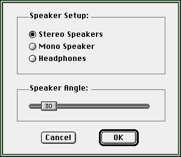

Using SoundSprocket
To use SoundSprocket in a game, you need to create a listener and one or more sound sources. Localized sounds are played through normal sound channels, into which the localization component has been installed, as illustrated in Figure 1-1 (page 1-6). Then, while the game is under way, you should play the appropriate sounds, change the positions, orientations, and velocities of the sources and the listener as appropriate, and then callSndSetInfoto update the 3D sound filtering characteristics. To achieve a sense of continuous motion, you should update the filter characteristics at least several times per second. This section shows how to accomplish these tasks.You need to explicitly create listeners and sound sources only when you use the high-level interfaces provided by SoundSprocket. You can, if you prefer, maintain the data for a sound source yourself and then use the low-level interfaces to send messages to the localization component. See "Using the Low-Level Interfaces" (page 1-20) for further information.
- Note
- The code examples shown in this section provide only rudimentary error handling.
Configuring Sound Output Devices
Your game should provide a 3D sound configuration dialog box that allows the user to select from stereo or monophonic speakers, or headphones. If the user is using stereo speakers, you should provide a method to set the angle between the speakers. The game may provide this functionality directly, using thesiSSpSetupconstant, or you can use theSSpConfigureSetupfunction to display a modal dialog that allows the user to control the features. UsingSSpConfigureSetupis recommended, because this allows Apple to change the contents of the dialog as the setup information evolves.
- Note
- These controls may be incorporated into a control panel in a future system software release.
SSpConfigureSetupdisplays the modal dialog shown below that allows the user to view and alter the speaker configuration settings. It creates a sound channel, installs the filter, and alters the setup for all filters when the user adjusts the controls.A sound effect is played while the user is adjusting the speaker angle slider. The slider in the 3D sound configuration dialog box should be adjusted so that the alternating sound effects appear to be as far to left and right of the user as possible. The game should not be playing any sounds when this function is called because it will interfere with the user's ability to adjust the slider for optimal sound enjoyment.
Figure 1-6 Controlling sound output devices

Installing the Localization Component
A localization component is a sound output component that provides 3D filtering for the sounds passed to it. You need to install an instance of the localization component into each sound channel for which you want SoundSprocket to produce 3D filtering. Listing 1-1 illustrates how to create a sound channel and install an instance of the localization component in it.Listing 1-1 Creating a localized sound channel
SndChannelPtr MyCreateLocalizedChannel (void) { SndChannelPtr mySndChannel = nil; OSStatus myErr; SoundComponentLinkmyLink; /* create a new sound channel */ myErr = SndNewChannel(mySndChannel, sampledSynth, initMono, nil); if (myErr != noErr) { return(nil); } /* define the type of the localization component */ myLink.description.componentType = kSoundEffectsType; myLink.description.componentSubType = kSSpLocalizationSubType; myLink.description.componentManufacturer = 0; myLink.description.componentFlags = 0; myLink.description.componentFlagsMask = 0; myLink.mixerID = nil; myLink.linkID = nil; /* install the localization component BEFORE the Apple Mixer */ myErr = SndSetInfo(mySndChannel, siPreMixerSoundComponent, &myLink); if (myErr != noErr) { return(nil); } else { return(mySndChannel); } }As you can see, theMyCreateLocalizedChannelfunction defined in Listing 1-1 callsSndNewChannelto create a new sound channel. If successful, it fills in the fields of a sound component link structure to specify the type of component to be installed. The localization component is of typekSoundEffectsTypeand subtypekSSpLocalizationSubType. Finally,MyCreateLocalizedChannelcalls theSndSetInfofunction to install the specified component before the Apple Mixer in the sound channel's component chain. IfSndSetInfocompletes successfully,MyCreateLocalizedChannelreturns the sound channel pointer to the caller.Controlling Filters
SoundSprocket filters are controlled by theSndSetInfofunction. The selectors you use to control them aresiSSpFilterVersion,siSSpCPULoadLimit,siSSpSetupandsiSSpLocalization.Accessing Version Information
To retrieve the version of the sound localization filter that is currently installed, callSndGetInfo, as in this example:SSpFilterVersionData filterVersion; err = SndGetInfo(sndChannel, siSSpFilterVersion, &filterVersion); if (err != noErr) ...You can use the filterVersion parameter to insure that the installed version of the sound filter is compatible with your game.Changing Localization Parameters
To change the characteristics of the 3D filtering on a given sound channel, callSndSetInfowith thesiSSpLocalizationselector and the address of anSSpLocalizationDatadata structure. The changes will take effect almost immediately.SSpLocalizationData localization; err = SndGetInfo(sndChannel, siSSpLocalization, &localization); if (err != noErr) ... localization.currentLocation.distance = 5; err = SndSetInfo(sndChannel, siSSpLocalization, &localization); if (err != noErr) ...Calling
- Note
- In future versions of SoundSprocket, the values of some fields may affect all localized sound channels. These fields may include
medium,humidity,roomSize,roomReflectivityandreverbAttenuation. This would occur if the implementation used a post-mix filter to implement these features. In this case, the most recent values sent to any sound channel will affect all sound channels. As a precaution, the application should not vary these values between sound channels.SndGetInfoforsiSSpLocalizationreturns the filter parameters that are currently in effect. For most fields, this is what was most recently set for this channel. For fields that are shared between sound channels, the most recent value that was set for any channel is returned.Determining CPU Load Steps
To determine the number of CPU load steps that the localization algorithms support, you can callSndGetInfothis way:UInt32 cpuLoadLimit; err = SndGetInfo(sndChannel, siSSpCPULoadLimit, &cpuLoadLimit); if (err != noErr) ...This is the maximum value that is defined for thecpuLoadfield ofSSpLocalizationData.Changing Speaker Configurations
To change the speaker configuration, callSndSetInfowith the selectorsiSSpSetupand theSSpSetupDatadata structure on a sound channel that has the 3D sound filters installed.SSpSetupData setup; setup.speakerKind = kSSpSpeakerKind_Headphones; setup.speakerAngle = 0; setup.reserved0 = 0; setup.reserved1 = 0; err = SndSetInfo(sndChannel, siSSpSetup, &setup); if (err != noErr) ...CallingSndGetInfoforsiSSpSetupreturns the current speaker configuration. The speaker configuration of all sound channels is affected by sending this message to any channel that has the component installed. The information is retained even when the system is restarted.Creating Listeners and Sound Sources
The virtual audio environment managed by SoundSprocket includes a single listener and one or more sound sources. You create a listener by calling theSSpListener_Newfunction. Listing 1-2 shows how to create a listener and set the listener unit of measurement to feet.Listing 1-2 Creating a listener
static SSpListenerReferencegListener = nil; void My3DSoundInit (void) { OSStatus myStatus; myStatus = SSpListener_New(&gListener); if (myStatus == noErr) { SSpListener_SetMetersPerUnit(gListener, 0.3048); } }To create a sound source, you can call theSSpSource_Newfunction, as shown in Listing 1-3.Listing 1-3 Creating a sound source
SSpSourceReference MyCreateSource (void) { SSpSourceReferencemySource = nil; OSStatus myStatus; myStatus = SSpSource_New(&mySource); return(mySource); }It's your responsibility to keep track of which sound sources are associated with which sound channels. A game that allows two sound sources might keep track of them in a pair of arrays accessed using global variables, as illustrated in Listing 1-4.Listing 1-4 Setting up a two-source audio environment
SSpSourceReferencegSources[2]; SndChannelPtr gChannels[2]; void MyInitSources (void) { gSources[0] = MyCreateSource(); /* see Listing 1-3 */ gSources[1] = MyCreateSource(); gChannels[0] = MyCreateLocalizedChannel();/* see Listing 1-1 */ gChannels[1] = MyCreateLocalizedChannel(); }Updating the Virtual Audio Environment
Once you've created a listener and one or more localized sound sources, you're ready to play localized sounds. To do this, you need to specify the characteristics of each sound source (position, orientation, velocity, and so forth), callSndSetInfoto pass that information to the localization component, and start a sound playing in the associated sound channel. Thereafter, you can change the 3D characteristics as desired and callSndSetInfoto achieve a sense of motion. Listing 1-5 illustrates a simple way to move a sound source from right to left.Listing 1-5 Panning a sound source from right to left
OSStatus MyPanSoundFromRightToLeft (Handle mySndResource) { OSStatus myStatus; TQ3Point3D myPoint; SSpLocalizationDatamyLocalization; float myZPos; /* z coord. of sound source */ long myTicks; /* for Delay */ /* start playing a sound */ myStatus = SndPlay(gChannels[0], mySndResource, true); if (myStatus != noErr) return(myStatus); /* slowly move source from listener's right to left */ for (myZPos = 1.0; myZPos >= -1.0; myZPos -= 0.1) { /* set position of source */ Q3Point3D_Set(myPoint, 1, 0, myZPos); SSpSource_SetPosition(gSources[0], myPoint); / *retrieve updated info - send it to localization component */ SSpSource_CalcLocalization(gSources[0], gListener, &myLocalization); SndSetInfo(gChannels[0], siSSpLocalization, &mymyLocalization); Delay(2, &myTicks); } }This sample code produces a sound that moves from left to right, on a line perpendicular to the front of the user. This has the effect of modulating the volume as well as a Doppler effect, increasing the volume as the sound approaches the center and decreasing the volume as the sound moves away to the right.The
MyPanSoundFromRightToLeftfunction defined in Listing 1-5 takes as a parameter a handle to a sound resource. It starts playing the resource using theSndPlayfunction. ThenMyPanSoundFromRightToLeftsets the initial position of the sound source and updates the virtual audio environment by callingSSpSource_CalcLocalizationandSndSetInfo. By default, the listener is at the origin looking straight down the positive x axis. Accordingly, placing the sound source at the point (1, 0, 1) makes it appear ahead and to the right of the listener. Finally,MyPanSoundFromRightToLeftgradually moves the sound source along the line x = 1 until it reaches the point (1, 0, -1), updating the audio environment after each position change.Using the Low-Level Interfaces
As you've seen in the preceding two sections, you use the high-level functions provided by SoundSprocket to create listeners and sound sources and to manipulate the data associated with those objects. However, you can (if you prefer) maintain the listener and source data yourself and send commands directly to the localization component using the Sound Manager'sSndSetInfofunction. To specify the data, you need to use theSSpLocalizationDatadata structure (page 1-30).Listing 1-6 shows how to pan a sound from right to left using the low-level SoundSprocket interfaces.
- Note
- The distinction between using SoundSprocket's high-level interfaces and its low-level interfaces is similar to the distinction between using QuickDraw 3D's retained rendering mode and its immediate rendering mode.
Listing 1-6 Panning a sound source from right to left
OSStatus MyLowLevelPanSoundFromRightToLeft (Handle mySndResource) { OSStatus myStatus; SSpLocalizationData myLocalization; float myAngle; long myTicks; /* for Delay */ /* start playing a sound */ myStatus = SndPlay(gChannels[0], mySndResource, true); if (myStatus != noErr) return(myStatus); myLocalization.medium = kSSpMedium_Air; myLocalization.humidity = 0; myLocalization.roomSize = 0; myLocalization.roomReflectivity = -1; myLocalization.reverbAttenuation = 0; myLocalization.sourceMode = kSSpSourceMode_Localized; myLocalization.referenceDistance = 1; myLocalization.coneAngleCos = 0; myLocalization.coneAttenuation = 0; myLocalization.currentLocation.elevation = 0; myLocalization.currentLocation.azimuth = 0; myLocalization.currentLocation.distance = 1; myLocalization.currentLocation.projectionAngle = 1; myLocalization.currentLocation.sourceVelocity = 0; myLocalization.currentLocation.listenerVelocity = 0; myLocalization.reserved0 = 0; myLocalization.reserved1 = 0; myLocalization.reserved2 = 0; myLocalization.reserved3 = 0; myLocalization.virtualSourceCount = 0; /* slowly move source from listener's right to left */ for (myAngle = 3.14; myAngle >= -3.14; myAngle -= 0.1) { myLocalization.currentLocation.azimuth = myAngle; SndSetInfo(gChannels[0], siSSpLocalization, &myLocalization); Delay(2, &myTicks); } }Unlike the high-level code sample in Listing 1-5, this code sample causes the sound to move from right to left in a semi-circle about the listener. Because the distance is constant, there is no amplitude change or Doppler effect in this sample.